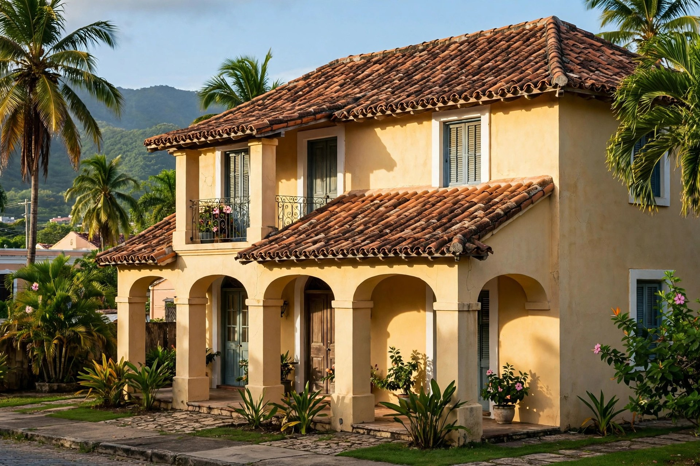
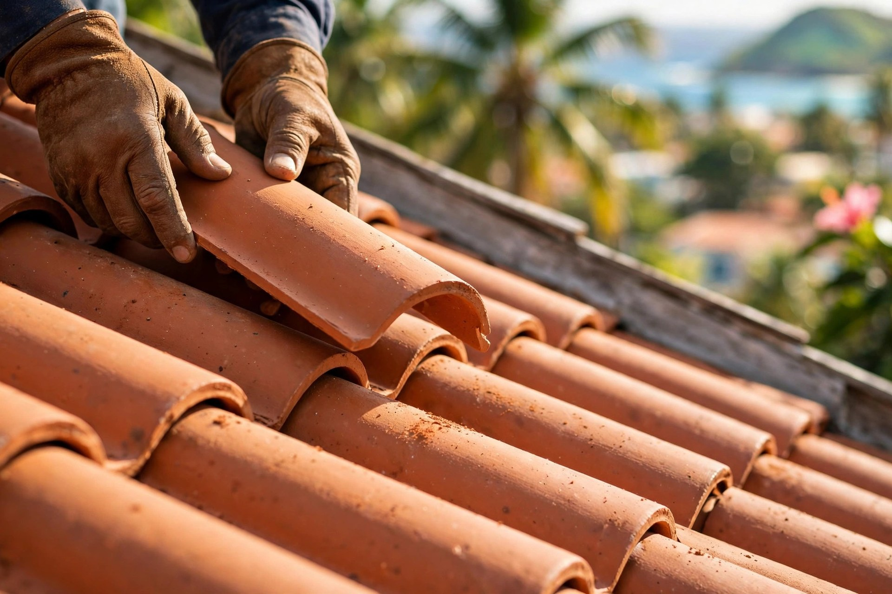
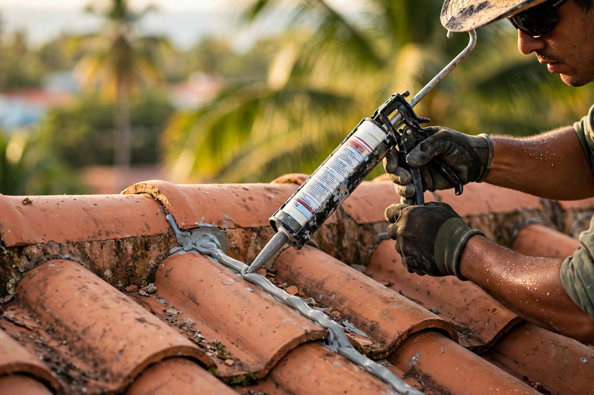
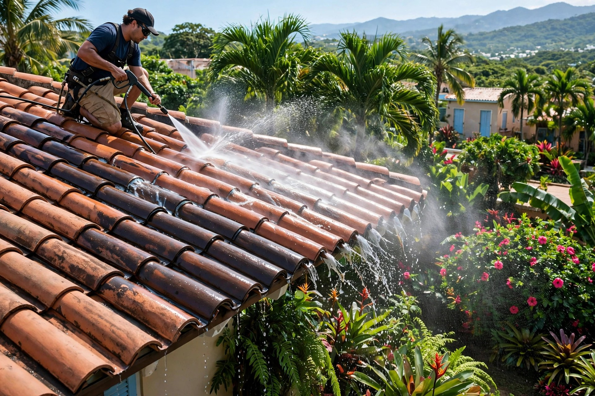
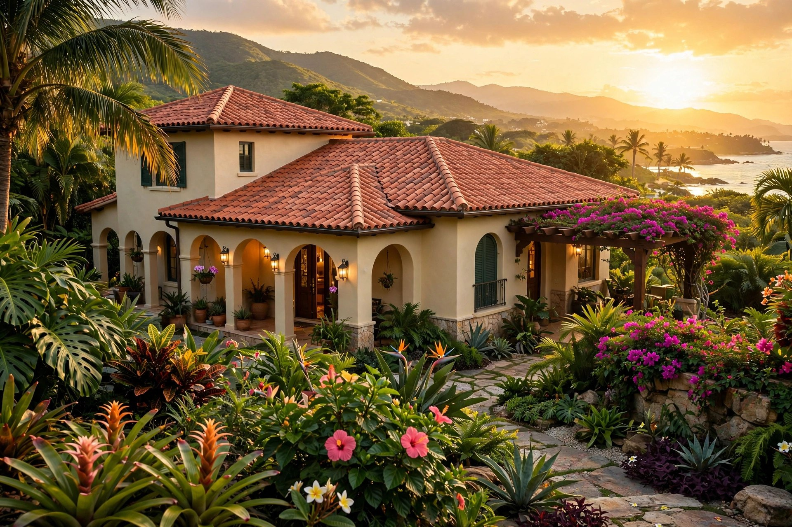

Instalación de tejas, reparación y sellado de techos en Mayagüez: el acabado clásico que protege por años.

Instalación, reparación y sellado: techos de teja que se ven y se sienten sólidos.




Todo lo que un techo de tejas necesita, en un solo equipo.
Techos de teja nuevos, hilera por hilera.
Impermeabilización bajo y sobre la teja.
Reemplazo de piezas rotas y reacomodo.
Limpieza cuidadosa sin quebrar piezas.
El punto más crítico, bien sellado.
Cotización al (787) 403-7661.
Oficio de teja con orgullo mayagüezano.
Conocemos las casas y el clima del oeste.
No todo techo es igual: la teja tiene su técnica.
Detalle pieza por pieza, sin prisa.
Cotización clara antes de empezar.
Lo que todo dueño pregunta antes de trabajar su techo de tejas.
Depende del estado de las tejas y la exposición. Lo inspeccionamos y te decimos qué necesita, sin compromiso.
Sí. Reemplazamos tejas rotas, reacomodamos las sueltas y sellamos los puntos críticos como la cumbrera.
No cuando se hace con la técnica correcta para teja. Lavamos con cuidado para no mover ni quebrar piezas.
Sí, la cumbrera es uno de los puntos más importantes: la revisamos y la sellamos para que no filtre.
La visita y el estimado son gratis en Mayagüez. Escríbenos fotos de tu techo por WhatsApp.
Esta página es una muestra de lo que hacemos. Llevamos tu negocio a internet con oferta de lanzamiento por tiempo limitado.